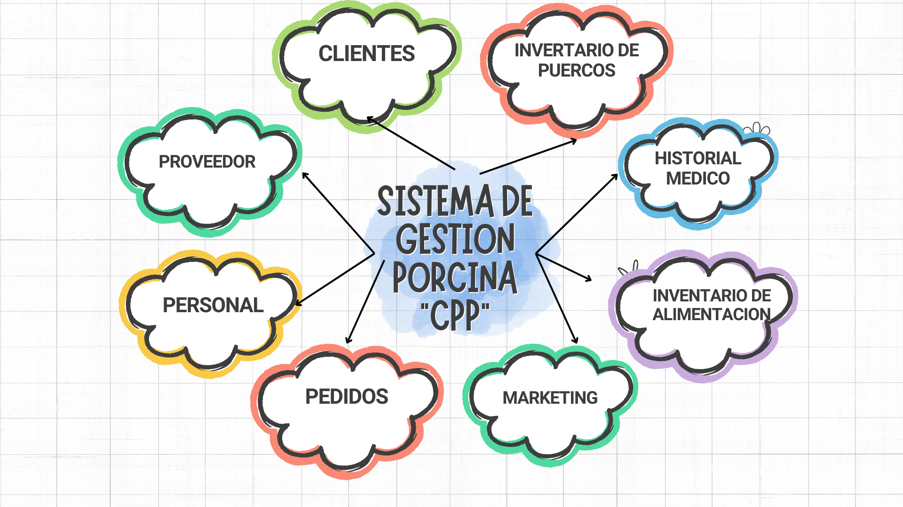
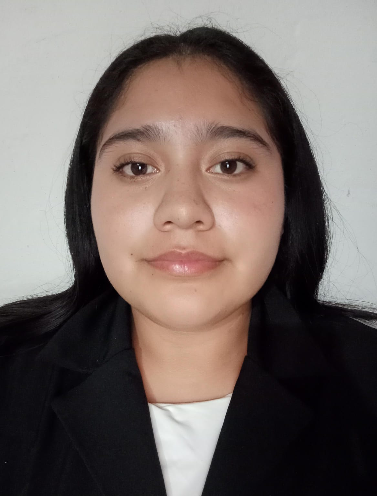

Se centra en la falta de automatización, lo que dificulta la eficiencia operativa y la toma de decisiones informadas. Esta situación es crítica, dado el aumento de la demanda de productos ganaderos y la necesidad de garantizar el bienestar animal
objetivo es mejorar la productividad y rentabilidad de las operaciones ganaderas, garantizando el bienestar animal y facilitando la toma de decisiones informadas en un contexto de creciente demanda de productos ganaderos
El sistema se fragmento utilizando la estrategia de “divide y vencerás” lo cual busca encontrar unidades de desarrollo lo bastante concisas que permite ser desarrolladas de manera independiente pero que al mismo tiempo sean fácil de acoplar al sistema completo.
|  | |
|
||
| Maria Isabel Olguin Zenil | Daniela Yamileth Pardo Gonzalez | April Milagros Falccon Caracas | Edwin Alvarez Hernandez | Samuel Cruz Godinez |
| 22011248@itsoeh.edu.mx | 22011589@itsoeh.edu.mx | 22011797@itsoeh.edu.mx | 220111015@itsoeh.edu.mx | 22011514@itsoeh.edu.mx |